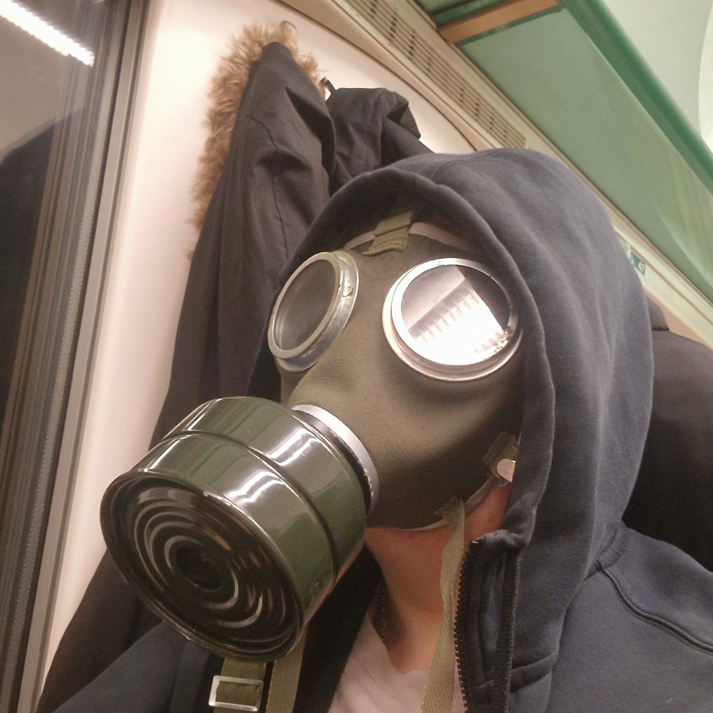

My Portfolio

Pap Bence Dominik
A Software Developer and Tester Technician
About
I'm a full-stack developer in the making — building things from the ground up, one project at a time. I work across the entire stack, from crafting interfaces that feel right to wiring up the logic that makes them run. Still early in the journey, but the work speaks louder than the years.
What I do
I design and develop web applications end-to-end. Frontend, backend, databases — I don't stop at the surface. My focus is on writing clean code, solving real problems, and building projects I'd actually want to use.
Skills
Full-stack development · Responsive UI · REST APIs · Version control (Git) · Problem-solving under constraints · Fast learner, slow to give up
Projects
This is where the real story is. Each project here represents a problem I decided to tackle — not for a grade, but because I wanted to see if I could. Browse through, break things, read the code.
Why Work With Me
I don't have years of experience — I have hunger. I pick things up fast, I don't cut corners, and I care about what I ship. If you're looking for someone to grow with, I'm worth the bet.